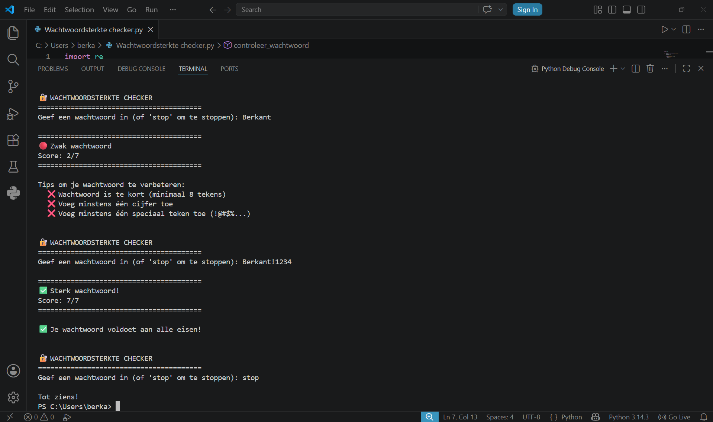

Over dit project
Voor dit project heb ik een wachtwoordsterkte checker gemaakt in Python. De applicatie analyseert een ingevoerd wachtwoord en geeft een score op 7 punten, samen met concrete tips om het wachtwoord te verbeteren. Dit project sluit aan bij mijn interesse in het beveiligen van digitale systemen.
Hoe werkt het?
De gebruiker voert een wachtwoord in via de terminal. De applicatie controleert vervolgens verschillende criteria en geeft een eindoordeel: zwak, matig of sterk.
Criteria
- Lengte van het wachtwoord (minimaal 8, bonus bij 12+)
- Aanwezigheid van hoofdletters
- Aanwezigheid van kleine letters
- Aanwezigheid van cijfers
- Aanwezigheid van speciale tekens zoals
!@#$%
Wat heb ik geleerd?
Tijdens dit project leerde ik werken met Python en de volgende concepten:
import re— reguliere expressies gebruiken om tekst te analyserenwhile— herhaling zolang de gebruiker wil doorgaandef— eigen functies schrijvenre.search()— zoeken naar patronen in tekst- Het belang van sterke wachtwoorden bij het beveiligen van systemen
Screenshot
